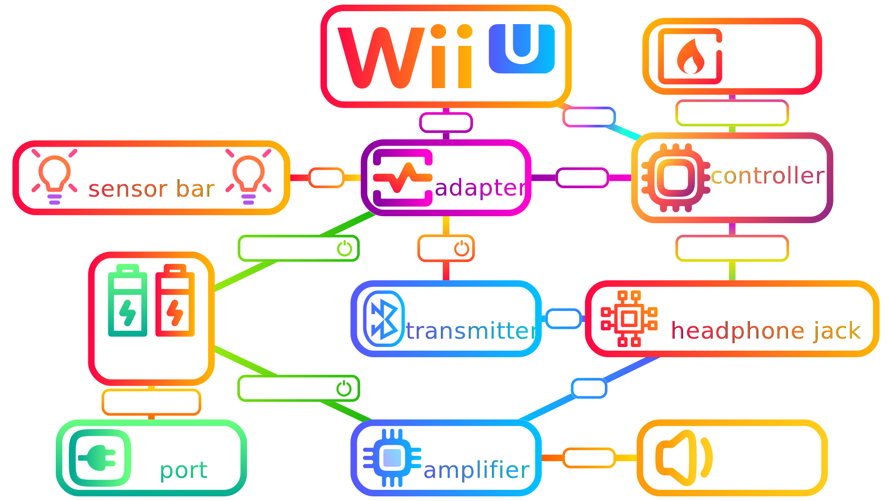

Here's an oversimplified description of how to make a portable Wii U.
get the stuff, which includes:
a Nintendo Wii U
a small screen
a 12v rechargeable battery
a usb c pd power adapter for a car
various wires and cables to connect everything together
a few other optional components like speakers, sensor bars, transmitters for bluetooth
and a 3D printed shell to house everything
put it together
good luck! this thing doesn't have a warranty
re-live your childhood in a more portable format
I made this diagram to show how to wire everything together

I actually made a better guide on my other website linked here. Maybe one day I will bother to make a decent video guide on how to build it, but for now just enjoy this placeholder content